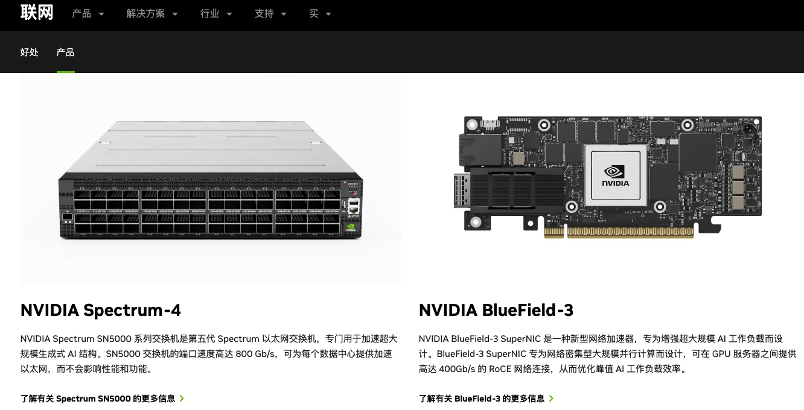
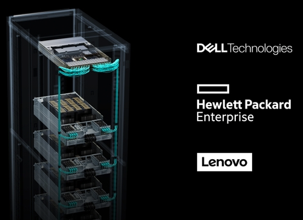
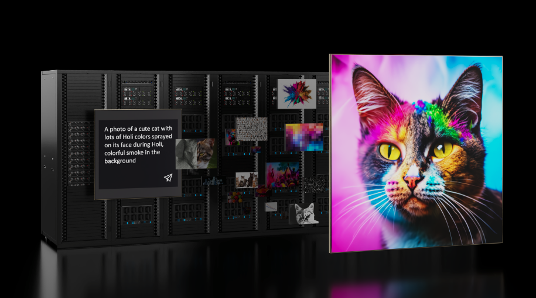
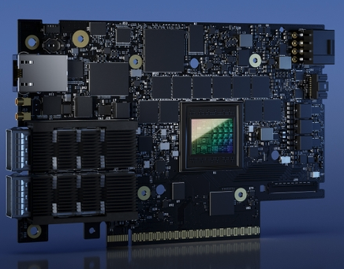
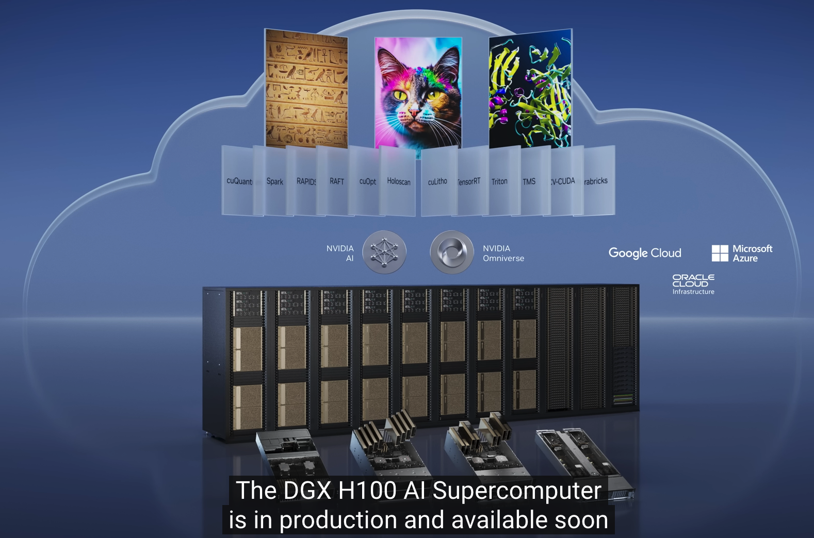

Nvidia网络技术-端到端网络解决方案
Nvidia网络技术-端到端网络解决方案
术语
performance per watt 每瓦性能
适用于现代工作负载的加速网络-强大、安全的基础设施的蓝图
简介
每年出货的 3000 万台数据中心服务器中，有三分之一用于运行软件定义的数据中心堆栈。企业需要发展其网络基础设施，以支持现代数据中心工作负载导致的呈指数级增长的数据处理量。
我们的加速网络解决方案提供 InfiniBand 和以太网的选择，为企业提供支持跨所有现代工作负载和存储要求的开发部署实施的基础设施，从而开启加速计算的新时代，从而最大限度地提高人工智能投资
人工智能时代的网络：网络定义数据中心-NVIDIA Spectrum-X (光谱)

简介
专为以太网 AI 云而构建, NVIDIA Spectrum™-X 以太网平台专为提高基于以太网的 AI 云的性能和效率而设计。 这项突破性技术实现了 1.6 倍的 AI 网络性能提升，并在多租户环境中实现了一致、可预测的性能。 Spectrum-X 建立在由 NVIDIA Spectrum-4 紧密耦合提供支持的网络创新之上 以太网交换机和 NVIDIA® BlueField®-3 SuperNIC。 Spectrum-X 网络优化可减少基于 Transformer 的大规模生成 AI 模型的运行时间，并提供更快的洞察时间
增强人工智能云的以太网 AI 工作负载需要具有高、有效带宽的低延迟网络，该网络还与 NVIDIA Collective 等集合库兼容 通讯库（NCCL）。 对于多个作业同时运行的云环境，性能隔离对于防止在同一计算基础设施上运行的租户之间的干扰至关重要。 为了满足人工智能云对高性能网络和云多租户的需求，Spectrum-X 利用融合以太网 (RoCE) 扩展上的远程直接内存访问 (RDMA)。 这些扩展构建在传统以太网之上，可提高有效带宽并确保工作负载之间的性能隔离
Spectrum-X的优势
- 提升AI云性能：Spectrum-X将AI云网络性能提升1.6倍，加速AI工作负载的处理、分析和执行，进而加速AI解决方案的开发和部署。
- 标准以太网连接：在增强以太网功能的同时，Spectrum-X 完全基于标准，并且与基于以太网的堆栈完全可互操作。
- 提高能效：通过提高性能，NVIDIA Spectrum-X 有助于打造更节能的 AI 环境。 这可以降低人工智能集群的功耗和运营成本。
- 增强的多租户性能：多租户环境中的性能隔离可确保每个租户的工作负载以最佳且一致的方式执行，从而提高客户满意度并提高服务质量。
- 更好的 AI 结构可见性：通过对流经多个交换机的流的可见性，可以识别性能瓶颈，并且是现代自动化结构验证解决方案的关键部分。
- 更高的 AI 可扩展性：前所未有的单跳扩展至 256 个 200G 端口或两层叶/主干拓扑中的 16K 端口，支持 AI 云的扩展，同时保持高水平的性能，使其成为不断发展的组织的理想解决方案 人工智能基础设施需求。
- 更快的网络设置：高级网络功能的自动化端到端配置针对 AI 工作负载进行了全面调整。
- 更高的弹性：凭借更高的弹性，可以消除因链路丢失而发生的级联性能问题，从而限制该单个链路的带宽损失。
- 强大的租户隔离：SpectrumX 利用 BlueField-3 SuperNIC，通过支持每个租户的安全虚拟私有云 (VPC) 提供增强的工作负载隔离
Dell Technologies、Hewlett Packard Enterprise、联想即将推出 NVIDIA 全新 AI 以太网网络平台
端到端平台采用最新的 NVIDIA Spectrum-X 网络，为客户利用 AI 实现业务转型奠定基础
2023 年 11 月 20 日

NVIDIA 今天宣布，戴尔科技集团、惠普企业和联想将率先将适用于 AI 的NVIDIA Spectrum-X™ 以太网网络技术集成到其服务器系列中，以帮助企业客户加快生成 AI 工作负载的速度。
Spectrum-X 专为生成式 AI 打造，为企业提供了新型以太网网络，与传统以太网产品相比，其 AI 通信网络性能可提高 1.6 倍。
来自三大顶级系统制造商的新系统将 Spectrum-X 与 NVIDIA Tensor Core GPU、NVIDIA AI Enterprise软件和NVIDIA AI Workbench软件结合在一起，为企业提供通过生成式 AI 实现业务转型的构建模块。
NVIDIA 创始人兼首席执行官黄仁勋表示：“随着企业升级数据中心以服务这些工作负载，生成式 AI 和加速计算正在推动代际过渡。” “加速网络是 NVIDIA 领先服务器制造商合作伙伴推出新一波系统的催化剂，可加速向生成式 AI 时代的转变。”
戴尔科技集团董事长兼首席执行官迈克尔·戴尔表示：“加速计算和网络是构建满足大型语言模型和生成式人工智能应用需求的系统的关键。” “通过我们的合作，戴尔科技集团和 NVIDIA 正在为客户提供快速、安全地从数据中提取情报所需的基础设施和软件。”
HPE 总裁兼首席执行官 Antonio Neri 表示：“生成式 AI 无疑将推动多个行业的创新。” “这些强大的新应用程序将需要一个完全不同的架构来支持各种动态工作负载。为了使客户能够充分发挥生成式 AI 的潜力，HPE 正在与 NVIDIA 合作，构建具有所需功能、效率和可扩展性的系统来支持这些应用程序。”
联想董事长兼首席执行官杨元庆表示：“生成式人工智能可以推动前所未有的转型，但对企业基础设施提出了前所未有的要求。” “联想与 NVIDIA 密切合作，正在构建高效、加速的系统，并配备为现代人工智能应用提供动力所需的网络、计算和软件。”
专为加速人工智能而构建的网络为了实现人工智能工作负载的峰值效率，Spectrum-X 结合了Spectrum-4 以太网交换机 的极致性能；NVIDIA BlueField®-3 SuperNIC，一种新型网络加速器，用于增强超大规模人工智能工作负载；还有加速软件。Spectrum-X 是对 BlueField-3 DPU 的补充，BlueField-3 DPU 是世界上最先进的基础设施计算平台。
Spectrum-4 是全球首款用于 AI 的 51Tb/秒 以太网交换机，可在大规模和负载下提供高效的数据吞吐量，同时最大限度地减少多租户、AI 云工作负载的网络拥塞。其智能、微调的路由技术始终能够最大限度地利用网络基础设施。
BlueField-3 SuperNIC 专为网络密集型、大规模并行计算而设计，在 GPU 服务器之间提供高达 400Gb/s 的融合以太网 RDMA (RoCE) 网络连接，并提高人工智能训练和推理流量的性能。簇。它们还支持安全的多租户数据中心环境，确保租户作业之间的确定性和隔离性能。BlueField-3 SuperNIC 拥有高能效、半高、半长 PCIe 外形尺寸，是企业级服务器的理想选择。
为 Spectrum-X 提供支持的加速软件采用 NVIDIA 软件开发套件（例如Cumulus Linux、Pure SONiC和NetQ）（它们共同推动了平台的突破性性能）以及NVIDIA DOCA™ 软件框架（ BlueField 的核心）。
NVIDIA AI Enterprise 为安全、稳定和受支持的生产 AI 提供框架、预训练模型和开发工具。NVIDIA AI Workbench 允许开发人员在 PC 或工作站上快速创建、测试和自定义预训练的生成式 AI 模型，然后将其扩展到几乎任何数据中心或云。
由 Spectrum-X 提供支持的 NVIDIA Israel-1 超级计算机 Spectrum-X 还支持 NVIDIA Israel-1 超级计算机，这是下一代 AI 系统的参考架构。Israel-1 是与 Dell Technologies 的合作项目，使用由 NVIDIA HGX™ H100 八 GPU 平台以及 BlueField-3 DPU 和 SuperNIC 以及 Spectrum-4 交换机提供支持的 Dell PowerEdge XE9680 服务器。
预计将于明年第一季度推出来自戴尔、HPE 和联想的具有完整 NVIDIA AI 堆栈的新系统
数据中心网络和人工智能时代
https://developer.nvidia.com/blog/networking-for-data-centers-and-the-era-of-ai/
2023 年 10 月 12 日
布莱恩·斯帕克斯

十多年来，传统的云数据中心一直是计算基础设施的基石，满足各种用户和应用程序的需求。然而，数据中心近年来不断发展，以跟上技术的进步和人工智能驱动计算不断增长的需求。这篇文章探讨了网络在塑造数据中心的未来和促进人工智能时代方面发挥的关键作用。
专业数据中心：AI工厂、AI云
目前正在出现两类不同的数据中心：人工智能工厂和人工智能云。这两者都是为了满足人工智能工作负载的独特需求而量身定制的，其特点是依赖加速计算。
AI 工厂旨在处理大规模工作流程以及大型语言模型(LLM) 和其他基础 AI 模型的开发。这些模型是构建更先进的人工智能系统的基石。为了实现跨数千个 GPU 的无缝扩展和高效利用资源，强大且高性能的网络势在必行。
人工智能云扩展了传统云基础设施的能力，以支持大规模的生成式人工智能应用。生成式人工智能超越了传统的人工智能系统，它根据经过训练的数据创建新的内容，例如图像、文本和音频。管理拥有数千名用户的人工智能云需要先进的管理工具和能够有效处理不同工作负载的网络基础设施。
人工智能和分布式计算
AI 工作负载是计算密集型的，特别是涉及 ChatGPT 和 BERT 等大型复杂模型的工作负载。为了加快模型训练和处理大量数据集，人工智能从业者已转向分布式计算。此方法涉及将工作负载分配到通过高速、低延迟网络连接的多个互连服务器或节点。
分布式计算对于人工智能的成功至关重要，而网络的可扩展性和处理越来越多节点的能力也至关重要。高度可扩展的网络使人工智能研究人员能够利用更多的计算资源，从而提高速度和性能。
在构建人工智能数据中心的网络架构时，必须以分布式计算为首要任务，打造一体化的解决方案。数据中心架构师必须仔细考虑网络设计，并根据他们计划部署的人工智能工作负载的独特需求定制解决方案。
NVIDIA Quantum-2 InfiniBand和NVIDIA Spectrum-X是两个专门设计和优化的网络平台，旨在应对 AI 数据中心的网络挑战，每个平台都有自己独特的功能和创新。
InfiniBand 推动 AI 性能
InfiniBand 技术一直是复杂分布式科学计算大规模超级计算部署的驱动力。它已成为人工智能工厂事实上的网络。凭借超低延迟，InfiniBand 已成为加速当今主流高性能计算 (HPC) 和 AI 应用的关键。高效 AI 系统所需的许多关键网络功能都是 NVIDIA Quantum-2 InfiniBand 平台原生的。
网络内计算由InfiniBand驱动，将基于硬件的计算引擎集成到网络中。这可以大规模卸载复杂的操作，并利用 NVIDIA 可扩展分层聚合和缩减协议 (SHARP)（一种网络内聚合机制）。SHARP 支持多个并发集体操作，使数据带宽加倍，以减少数据并增强性能。
InfiniBand 自适应路由以最佳方式分散流量，缓解拥塞并提高资源利用率。在子网管理器的指导下，InfiniBand 根据网络状况选择无拥塞路由，在不影响数据包到达顺序的情况下最大限度地提高效率。
InfiniBand 拥塞控制架构可保证确定性的带宽和延迟。它使用三阶段流程来管理拥塞，防止人工智能工作负载出现性能瓶颈。
这些固有的优化使 InfiniBand 能够满足人工智能应用的需求，最终推动卓越的性能和效率。
导航以太网进行人工智能部署
为人工智能基础设施部署以太网需要满足以太网协议的特定需求。随着时间的推移，以太网已经包含了广泛、全面且（有时）复杂的功能集，可以满足各种网络场景的需求。
因此，开箱即用的或传统的以太网并不是专门为高性能而设计的。使用传统以太网作为计算结构的 AI 云只能实现优化网络性能的一小部分。
在多个 AI 作业同时运行的多租户环境中，性能隔离对于防止性能进一步下降至关重要。如果出现链路故障，传统以太网结构会导致集群的AI性能下降一半。这是因为传统以太网主要针对日常企业工作流程进行了优化，并非旨在满足依赖NVIDIA 集体通信库 (NCCL) 的高性能 AI 应用程序的需求。
这些性能问题是由传统以太网固有的因素造成的，包括：
- 较高的开关延迟，在商品 ASIC 中很常见
- 分割缓冲交换机架构，可能导致带宽不公平
- 针对 AI 工作负载生成的大流量进行了次优化的负载平衡
- 性能隔离和嘈杂的邻居问题
Spectrum-X 网络平台解决了这些问题以及更多问题。Spectrum-X 基于标准以太网协议，具有融合以太网 RDMA (RoCE) 扩展，可增强 AI 性能。这些扩展利用了 InfiniBand 本身的最佳实践，并为以太网带来了自适应路由和拥塞控制等创新。
Spectrum-X 是唯一能够提供多租户生成式 AI 云所需的高效带宽和性能隔离的以太网平台，这得益于 Spectrum-4 与NVIDIA BlueField-3 DPU 的密切配合。
概括
人工智能时代已经到来，网络是其成功的基石。为了充分发挥人工智能的潜力，数据中心架构师必须仔细考虑网络设计，并根据人工智能工作负载的独特需求定制这些设计。解决网络问题是释放人工智能技术全部潜力和推动数据中心行业创新的关键。
NVIDIA Quantum InfiniBand凭借其超低延迟、可扩展性能和高级功能集，成为 AI 工厂的理想选择。NVIDIA Spectrum-X凭借其专门针对 AI 构建的技术创新，为构建基于以太网的 AI 云的组织提供了突破性的解决方案。
要了解有关 AI 性能需求和网络要求的更多信息，请参阅AI 时代的网络白皮书。加入NVIDIA 开发者基础设施和网络论坛中的对话。
相关资源
- GTC 会议：人工智能和云时代的网络安全转型（2023 年春季）
- GTC 会议：构建 AI 就绪数据中心（由 Sterling 演讲）（2023 年春季）
- GTC 会议：数据中心数字孪生自动化起步（2023 年春季）
- 网络研讨会：人工智能时代的网络
- 网络研讨会：利用 NVIDIA Spectrum-3 加速 AI、云、存储和安全性能
- 网络研讨会：NVIDIA 和 VMware 合作将 AI 引入每个数据中心
标签
数据中心/云| 生成式人工智能/法学硕士| 网络| 硬件/半导体| BlueField DPU | InfiniBand | 一般兴趣| 初学者技术| 最佳实践| 最佳实践| 以太网| 精选| 法学硕士| NCCL | 频谱以太网
关于作者

关于 Brian Sparks Brian Sparks 是 NVIDIA InfiniBand 和以太网网络平台的高级营销总监。他在数据中心网络和安全市场拥有 20 多年的经验，其职责包括担任各种营销和沟通领导角色，以及战略 HPC 和网络生态系统支持。他目前担任 InfiniBand 贸易协会 (IBTA) 和统一通信框架 (UCF) 联盟的营销工作组主席。Brian 拥有圣何塞州立大学传播学学士学位。
Oracle 云基础设施选择 NVIDIA BlueField 数据中心加速平台
Hyperscaler 将 BlueField-3 DPU 添加到其网络堆栈中，以减轻 CPU 上的数据中心任务负担
2023 年 3 月 21 日

GTC — NVIDIA 今天宣布 Oracle 云基础设施 (OCI) 已选择NVIDIA BlueField®-3 DPU作为其网络堆栈的最新成员，为 OCI 客户从 CPU 卸载数据中心任务提供了强大的新选项。
BlueField-3 是 NVIDIA 的第三代数据处理单元，使企业能够构建从云到数据中心再到边缘的软件定义、硬件加速的 IT 基础设施。它通过卸载、加速和隔离基础设施工作负载来提高数据中心的性能、效率和安全性，从而释放昂贵的 CPU 内核来运行业务应用程序。
OCI 为其客户提供广泛的云基础设施和平台服务，以便在云或本地构建和运行应用程序和服务。通过利用 BlueField-3，OCI 正在扩展其长期以来从 CPU 卸载数据中心基础设施任务的方法。
NVIDIA 创始人兼首席执行官黄仁勋表示：“人工智能时代需要云数据中心基础设施来支持非凡的计算需求。” “NVIDIA 的 BlueField-3 DPU 实现了这一进步，将传统的云计算环境转变为加速、节能且安全的基础设施，以处理生成式 AI 的苛刻工作负载。”
Oracle 云基础设施执行副总裁 Clay Magouyrk 表示：“Oracle 云基础设施为企业客户提供了几乎无与伦比的人工智能和科学计算基础设施访问能力，并具有改变行业的能力。” “NVIDIA BlueField-3 DPU 是我们提供最先进、可持续的云基础设施和极致性能战略的关键组成部分。”
BlueField-3 提升数据中心性能、效率和安全性 BlueField-3 是提供云和人工智能服务的数据中心控制平面的基础。测试显示，与不使用 DPU 的服务器相比，使用 NVIDIA BlueField DPU 的服务器功耗最多可降低 24%。
与上一代 BlueField 相比，DPU 支持高达 400 GB/秒的以太网和 InfiniBand 连接，并提供 4 倍以上的计算能力、高达 4 倍的加密加速速度、2 倍的存储处理速度和 4 倍的内存带宽。
BlueField 还通过NVIDIA DOCA™ 软件框架提供完全的向后兼容性。DOCA 为开发人员提供了先进的零信任安全功能，包括创建计量云服务的能力，这些服务可以控制资源访问、验证每个应用程序和用户、隔离潜在受感染的机器以及帮助保护数据免遭泄露和盗窃。
观看 Huang在 GTC 主题演讲中讨论 NVIDIA BlueField-3 DPU 。
观看 NVIDIA 首席执行官黄仁勋 (Jensen Huang) 公布一系列加速计算突破——从人工智能培训到部署、半导体到软件库、系统到云服务——这将有助于每个行业的转型。
DGX(大狗熊)

NvidiaCloud

英伟达 GTC大会
添加语言
工具
维基百科，自由的百科全书
| 英伟达 GTC | |
|---|---|
| 日期） | 三月和十一月（4-5 天） |
| 频率 | 半年一次 |
| 场地 | 2009–2019：圣何塞会议中心2020–2023：在线 |
| 地点 | 2009–2019：加利福尼亚州圣何塞2020–2023：在线 |
| 成立 | 2009 年 10 月 2 日 |
| 最近的 | 2023 年 3 月 20 日；8个月前 |
| 出席率 | 75,358 （预计） |
| 举办 | 英伟达 |
| 网站 | www.nvidia.com/gtc/ _ _ _ _ |
NVIDIA GTC（GPU 技术大会）是面向开发者的全球 AI 会议，汇聚了开发者、工程师、研究人员、发明家和 IT 专业人士。[1]主题集中于人工智能(AI)、计算机图形学、数据科学、机器学习和自主机器。每次会议都以 Nvidia 首席执行官兼创始人黄仁勋的主题演讲开始，然后是与来自世界各地的专家举行的各种会议和对话。
它于 2009 年起源于加利福尼亚州圣何塞，最初关注的是通过 GPU 解决计算挑战的潜力。[2]近年来，会议焦点已转向人工智能和深度学习的各种应用，包括：自动驾驶汽车、医疗保健、高性能计算、专业可视化以及 Nvidia 深度学习学院 (DLI) 培训。[3]
历史[编辑]
GTC 2018 吸引了超过 8,400 名与会者。由于 2020 年新冠疫情大流行，GTC 2020 改为数字活动，吸引了大约 59,000 名注册者。2021 年 GTC 主题演讲于 4 月 12 日在YouTube上直播，其中一部分是使用 Nvidia Omniverse实时渲染平台通过 CGI 制作的。由于该活动的照片真实感，包括首席执行官黄仁勋的模型，新闻媒体报道称无法辨别主题演讲的一部分是CGI，直到后来在 8 月 11 日的一篇博客文章中披露。
DPU和DOCA
三大特性
卸载, 加速, 隔离
零信任-认证-监控
DOCA1.3

BF2+Connect-6DX

ASAP加速网络功能(ACL/Routing/NAT…)

DOCA流水线

DOCA 流初始化步骤

插入优化

ARP风暴控制


流转发

流水线


设置

广播给CPU

丢包流水线

实战


show entries

ping包, 看流表

抓包-查看丢包-广播-卸载包风暴硬件

2022/5/11
- 前后兼容
- purchage
- zero trust 保证性能
- dpu对于挖比特币帮助不是很大
参考
Nvidia网络技术汇总: https://www.nvidia.com/en-us/networking
NvidiaAI网络: https://resources.nvidia.com/en-us-networking-ai
巴塞罗那-边缘云技术大会: https://www.hpe.com/us/en/discover-more-network/events/discover-barcelona-2023.html
戴尔+惠普+联想+Nvidia推出全新AI以太网网络平台: https://nvidianews.nvidia.com/news/nvidias-new-ethernet-networking-platform-for-ai-available-soon-from-dell-technologies-hewlett-packard-enterprise-lenovo
Nvidia技术博客: https://developer.nvidia.com/blog/
2023 年最受欢迎的 NVIDIA 技术博客文章：生成式 AI、法学硕士、机器人技术和虚拟世界的突破: https://developer.nvidia.com/blog/year-in-review-trending-posts-of-2023/
全方位宇宙(Omniverse)术语: https://docs.omniverse.nvidia.com/extensions/latest/common/glossary-of-terms.html
DOCA入门: https://www.youtube.com/watch?v=H7T-yS4FTqI
开发者早期访问: https://developer.nvidia.com/nvidia-doca-sdk-early-access
晓兵
博客: https://logread.cn | https://blog.csdn.net/ssbandjl | https://cloud.tencent.com/developer/user/5060293/articles
weixin: ssbandjl
公众号: 云原生云

- 原文作者：晓兵
- 原文链接：https://logread.cn/post/nvidia/nvidia_network_tech/
- 版权声明：本作品采用知识共享署名-非商业性使用-禁止演绎 4.0 国际许可协议进行许可，非商业转载请注明出处（作者，原文链接），商业转载请联系作者获得授权。